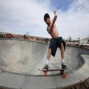

<br/><div align="center"><small>Static Image Editing</small></div>

<br/><div align="center"><small>Each cell shows a frame generated using different optical flow for the same image.</small></div>

<p></p><table border=1 id="data"><tr><td></td><td></td><td></td><td></td><td></td><td></td><td></td><td></td><td></td><td></td></tr><tr><td></td><td></td><td></td><td></td><td></td><td></td><td></td><td></td><td></td><td></td></tr><tr><td></td><td></td><td></td><td></td><td></td><td></td><td></td><td></td><td></td><td></td></tr><tr><td></td><td></td><td></td><td></td><td></td><td></td><td></td><td></td><td></td><td></td></tr></table>
<br/><div align="center"><small>Generated using <a href="https://github.com/rohitgirdhar/PyHTMLWriter">PyHTMLWriter</a></small></div>
